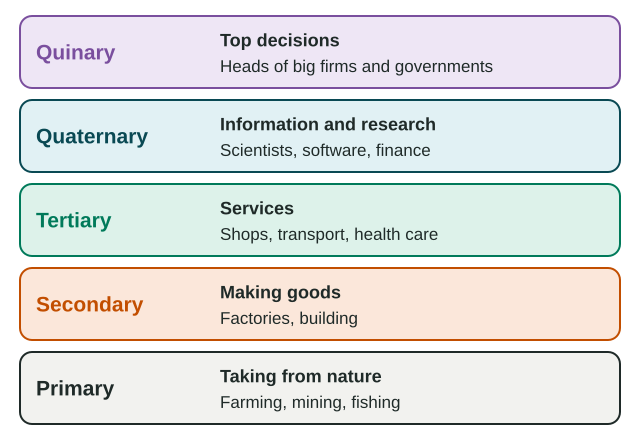
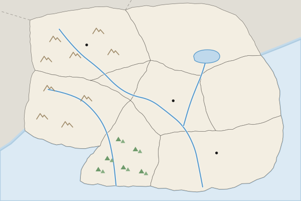

Economic Sectors and Patterns
Jobs fall into five sectors, from taking resources from nature to making the top decisions.
Part 1 · Hook
Why this matters
Part 2 · Before you start
What this builds on
Part 3 · Prerequisite check
Quick check before you start
1. What is the situation of a place?
- Its location relative to other places, such as rivers, roads and markets
- Its physical features, such as soil and climate
- Its latitude and longitude
- The feeling people have about it
Show the answer
Situation is a place's location relative to other places; factory location depends on it.
- Correct: Its location relative to other places, such as rivers, roads and markets:
- Its physical features, such as soil and climate:
- Its latitude and longitude:
- The feeling people have about it:
2. What are economies of scale?
- Lower cost per item when a firm produces in large amounts
- Higher prices for goods made far away
- Taxes on goods that cross a border
- Small farms that sell at local markets
Show the answer
Producing more spreads fixed costs over more items, so each costs less.
- Correct: Lower cost per item when a firm produces in large amounts:
- Higher prices for goods made far away:
- Taxes on goods that cross a border:
- Small farms that sell at local markets:
Part 4 · See it
See it first

Part 5 · Step by step
How it works, step by step
- A good is made from raw materials, by workers, for buyersits maker weighs the costs of raw materials, labor, energy and transport
- A product weighs less than its raw materials (weight-losing)the factory locates near the raw materials, as copper smelters do near Chile's mines
- A product weighs more than its inputs (weight-gaining)the factory locates near its market, as soft-drink bottlers do near cities
- Goods switch from ships to trains at a port (a break-of-bulk point)processing plants cluster there, as at Rotterdam
Part 6 · Key ideas
Key ideas
- Five sectors: primary (take from nature), secondary (make goods), tertiary (services), quaternary (information and research), quinary (top decisions).
- Sort a job by what the worker does, not by what the firm sells.
- Least cost theory: a factory locates where transport, labor and nearby-firm costs are lowest. Weight-losing industries go to the raw material; weight-gaining ones go to the market.
- A break-of-bulk point is where goods change transport modes, such as a port; processing clusters there.
- Countries often classed as core have mostly service, research and decision jobs; those often classed as periphery have more primary work; the semiperiphery is in between.
Part 7 · Misconception
A common mistake
The wrong idea: A factory always locates where wages are lowest.
What actually happens: Labor is one cost among several. A copper smelter sits by the mine to avoid hauling waste rock, a bottler sits by its buyers, and Iceland's aluminum smelters follow cheap power. The heaviest cost decides.
Part 8 · Check yourself
Check yourself
Exam-style questions. Anything you miss goes into your review queue.
Map
A mine, a market and a port in Country A

1. A copper smelter turns about 100 tonnes of ore into 2 tonnes of copper. Using least cost theory, where on the map should it locate?
- Near the copper mine in the Northern Hills
- Near the main market in the Capital Region
- At the seaport on the South Coast, far from the mine
- In the Western Uplands, where there is no mine or market
Show the answer
A weight-losing industry locates near its raw material: the product weighs far less than the ore, so smelting first saves transport.
- Correct: Near the copper mine in the Northern Hills: Right: smelting is weight-losing, so it locates near the mine and ships only the light metal.
- Near the main market in the Capital Region: That fits a weight-gaining industry. Here 98 tonnes of waste rock would travel to the capital for nothing.
- At the seaport on the South Coast, far from the mine: Hauling all the waste rock to the coast costs more than smelting at the mine first.
- In the Western Uplands, where there is no mine or market: Least cost theory picks the place with the lowest transport cost, and the uplands add distance from both.
2. A soft-drink company bottles drinks by adding local water to a small amount of syrup. Where on the map should its plant locate?
- Next to the copper mine, far from most buyers
- Near the main market in the Capital Region
- At the seaport, to export the water by ship
- Anywhere in the country, since transport costs are equal
Show the answer
A weight-gaining industry adds weight (here water) during production, so it locates near the market to keep its heavy shipments short.
- Next to the copper mine, far from most buyers: The mine has nothing the bottler needs; its plant would sit far from buyers.
- Correct: Near the main market in the Capital Region: Right: bottling is weight-gaining, so it locates near the buyers it ships to.
- At the seaport, to export the water by ship: The water is found almost everywhere; exporting it adds cost.
- Anywhere in the country, since transport costs are equal: Distance from buyers changes the cost of shipping heavy bottles.
3. Copper from the smelter leaves Country A by sea. At the seaport, it moves from trains onto ships. What does that make the seaport?
- A break-of-bulk point, where goods change transport
- A raw material site, where the copper is first dug out of the ground
- A market, where the copper is mostly used up in factories
- A quinary decision center
Show the answer
A port where goods move between trains and ships is a break-of-bulk point; firms often process goods there because they are unloaded anyway.
- Correct: A break-of-bulk point, where goods change transport: Right: a break-of-bulk point is where cargo switches modes, here from rail to ship.
- A raw material site, where the copper is first dug out of the ground: The copper is dug at the mine, not at the port.
- A market, where the copper is mostly used up in factories: The copper passes through the port on its way abroad.
- A quinary decision center: Top decisions are a kind of work, not a transfer point for goods.
4. Place each job at a carmaker in its economic sector, from the top of the ladder (quinary) to the bottom (primary).
The five economic sectors, top to bottom
- Quinary
- Quaternary
- Tertiary
- Secondary
- Primary
Pick a piece, then the place it belongs. Drag works too. Pick a filled place to take its piece back.
Show the answer
Sort each job by what the worker does: decide (quinary), handle information (quaternary), serve (tertiary), make (secondary), take from nature (primary).
- Quinary: Chief executive of the carmaker
- Quaternary: Engineer writing car software
- Tertiary: Salesperson at a car dealer
- Secondary: Worker on the assembly line
- Primary: Miner digging iron ore for steel
5. A scientist at a drug company in Basel, Switzerland, runs lab research on new medicines. The company's chief executive decides to build a new factory. How are their jobs classed?
- Both are tertiary, because both work for a service firm
- Both are secondary, because the company makes medicines
- The scientist is quaternary; the chief executive is quinary
- The scientist is quinary; the chief executive is quaternary
Show the answer
Quaternary work handles information and research; quinary work is the highest level of decision-making.
- Both are tertiary, because both work for a service firm: Research and top decisions are split out from general services as quaternary and quinary.
- Both are secondary, because the company makes medicines: Sort by what each worker does, not by what the firm sells.
- Correct: The scientist is quaternary; the chief executive is quinary: Right: research creates information (quaternary); top-level decisions are quinary.
- The scientist is quinary; the chief executive is quaternary: This swaps them: research is quaternary, top decisions are quinary.
6. Rotterdam, at the mouth of the Rhine River in the Netherlands, has many oil refineries and processing plants beside its docks. Why do they cluster there?
- Oil is drilled under the docks
- Rotterdam is the capital, so firms are required to locate there
- Cargo switches to barges and trains there anyway
- The Rhine is too shallow for barges, so goods stop at the coast
Show the answer
Rotterdam is a break-of-bulk point: ocean cargo switches to river barges, trains and trucks there, so refining and processing at the docks saves handling costs.
- Oil is drilled under the docks: The oil arrives by ship; it is not drilled under the city.
- Rotterdam is the capital, so firms are required to locate there: Amsterdam is the capital, and capitals do not force firms to locate in them.
- Correct: Cargo switches to barges and trains there anyway: Right: at a break-of-bulk point the goods are handled anyway, so processing them on the spot saves a step.
- The Rhine is too shallow for barges, so goods stop at the coast: Barges do carry goods up the Rhine into Germany; that is why the port works as a transfer point.
Part 9 · Summary
Summary
Part 10 · Up next
What comes next
Part 11 · Connections